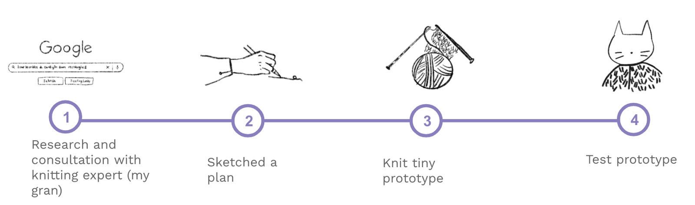

Knitted prototype: how to make a cardigan out of five rectangles
One rainy day during lockdown in the UK, I wondered whether I could make a cardigan out of 5 knitted rectangles.

A quick google search showed that no one had yet written a wikihow or made a youtube video on the topic, and so I figured it was worth testing out.
But before investing time, money and effort into knitting an adult sized cardigan, I decided to prototype my idea, to then scale up later if the endeavour proved successful.
Pre-planning
As with all projects I created my hypothesis to test, and defined my success metrics to keep me focused, because this was a project of imperative importance.
My design hypothesis:
I believe that I can make a very basic cardigan
If a user can wear the knitted pieces on their body
Then I will see that you can make a cardigan from 5 rectangles.
My two metrics of success:
1) Is it technically possible?
The end product needed to clearly resemble and function as a cardigan.
2) Was the knitting enjoyable?
Before I add another creative past-time I wanted to know whether I enjoyed knitting.
Process
With those factors listed above in mind, I created a process plan for the steps I would take.

Step 1
First, I did my ground research, scouring knitting websites, interviewed knitting experts (my gran and my friend) to consult on the feasibility of a rectangle cardigan. I learnt that it was possible.
Step 2
Then I sketched out a plan of how the rectangles would come together using pen and paper.
Step 3
I then bought a small ball of yarn, knitted 5 tiny rectangles and sewed them together.


Step 4
Of course, I then tested my prototype on two small sized users. The first was a human shaped soft toy I had in my house, my second user was my colleague Dave Hunter's cat.